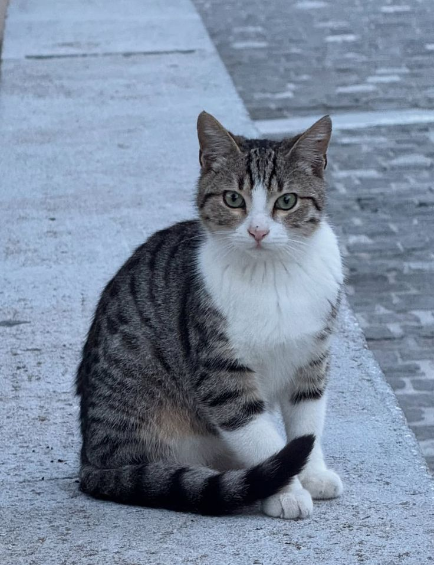

FEATURED • CRITICAL GUIDE
The Critical First 24 Hours: Step-by-Step Action Plan
Acting quickly can help when a pet goes missing. Learn how to search nearby, alert your community, prepare useful information, and organise your search.
Search Advice, Recovery Guides & Prevention
Find practical information for searching, protecting, and caring for your pets.
No articles found. Try another search or category.